Come usare l'app per registrare le partite di fine allenamento e i tornei, tenere la classifica Elo e pubblicarla nel gruppo WhatsApp.
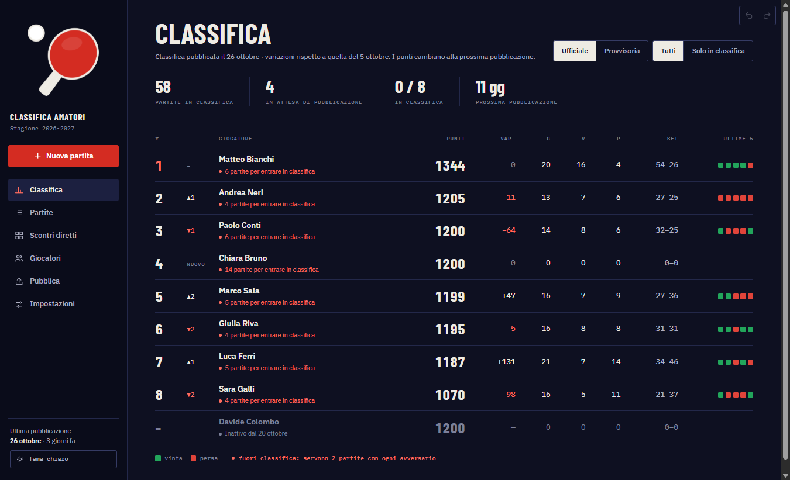
La prima volta l'app chiede solo due cose:
Se hai già un file di dati (per esempio da un altro PC), clicca invece “Ho già un file dati…” e sceglilo.
Dimenticato qualcuno? Nessun problema: i giocatori si aggiungono in qualsiasi momento (capitolo 5).
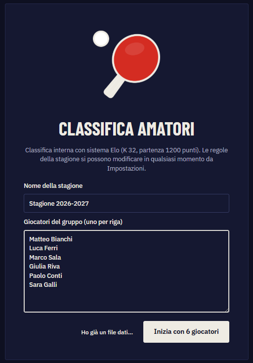
| Nel menu | A cosa serve |
|---|---|
| Nuova partita rosso | Registrare le partite della serata e quelle dei tornei. |
| Classifica | La classifica aggiornata, con variazioni dall'ultima pubblicazione. |
| Partite | Tutte le partite, per serata e per torneo: correggere, escludere, eliminare, recuperare dal cestino. |
| Scontri diretti | Chi ha giocato con chi e quante volte; le partite in esubero. |
| Giocatori | Aggiungere giocatori e vedere lo stato di ciascuno. |
| Pubblica | Preparare immagine o testo per il gruppo WhatsApp (classifica e tornei). |
| Impostazioni | Regolamento, aspetto, dati e backup. |
In basso a sinistra: la data dell'ultima pubblicazione e il pulsante per passare dal tema scuro al tema chiaro.
| Ctrl + 1 … 7 | Aprire le pagine del menu, nell'ordine (Ctrl+2 = Nuova partita). |
| Ctrl + Z | Annullare l'ultima operazione. |
| Ctrl + Y | Ripetere un'operazione annullata. |
| Invio | In Nuova partita, dal campo Note: salvare la partita. |
L'app salva da sola ogni modifica: non esiste un pulsante “Salva file” e si può chiudere in qualsiasi momento.
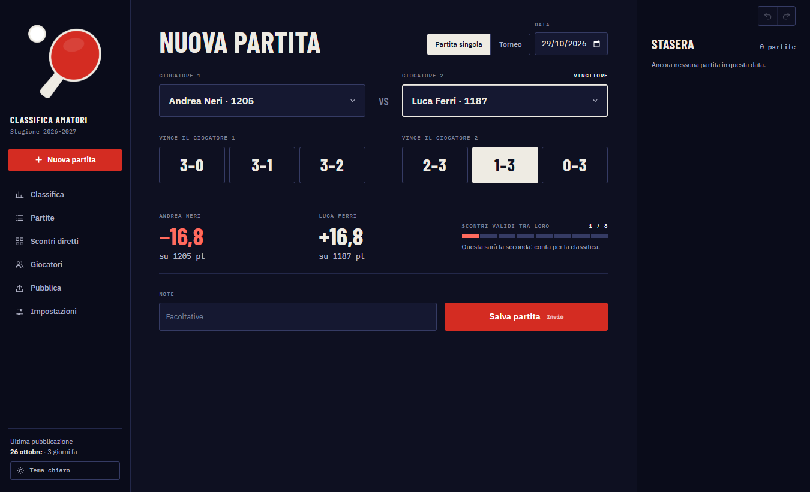
Si possono inserire anche partite di serate passate: la classifica viene ricalcolata da quel giorno in poi, nell'ordine giusto.
Le frecce in alto a destra (o Ctrl+Z) annullano l'ultima operazione: una partita salvata, un giocatore aggiunto, un torneo eliminato… Si possono annullare anche più operazioni di fila, e Ctrl+Y le ripete.
Le partite sono divise per serata; ogni torneo ha il suo gruppo, evidenziato in oro. In alto si può filtrare per giocatore e scegliere Tutte, Valide, Escluse o il Cestino. Per ogni partita:
| Modifica | Cambiare data, giocatori, risultato, note. Per le partite di torneo con gironi o tabellone si correggono risultato, set e note (giocatori e fase no: in quel caso si elimina e si reinserisce). |
| Escludi / Includi | Decidere a mano se una partita conta, scrivendo il motivo. Serve per i casi particolari, per esempio far contare una partita in esubero. |
| Elimina | La partita va nel Cestino, da dove si può ripristinare. |
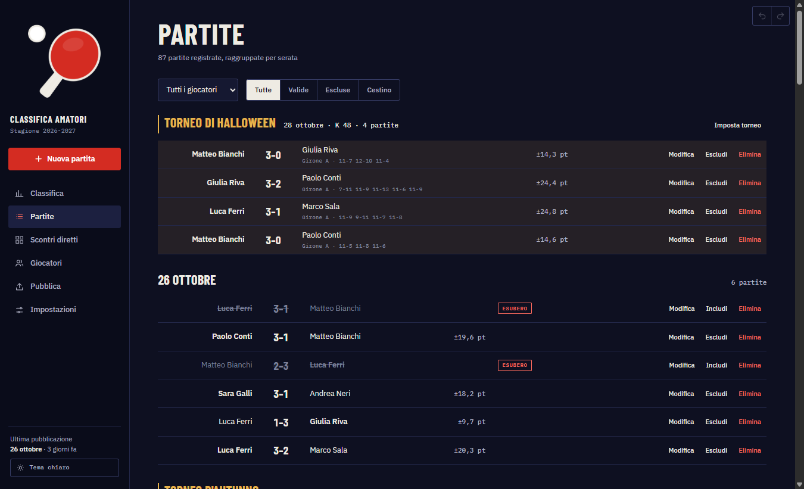
Dopo ogni correzione la classifica si ricalcola da sola, anche per le partite delle settimane precedenti.
In Giocatori scrivi nome e cognome, controlla la data di ingresso e clicca Aggiungi. Parte da 1200 punti, anche a stagione in corso.
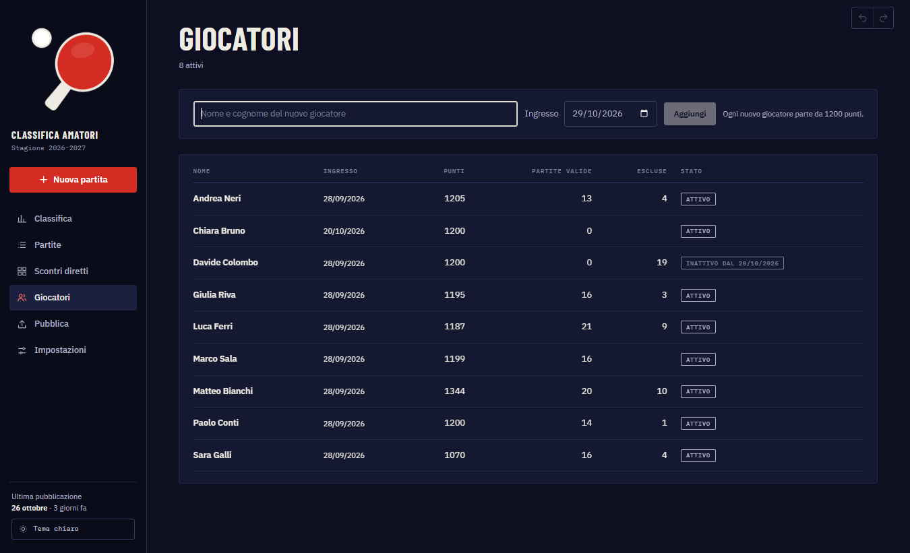
Clicca il giocatore per aprire la sua scheda, poi Rinomina. Il nome cambia ovunque, anche nelle partite già registrate.
Nella scheda del giocatore clicca “Segna come inattivo”. L'app mostra prima quali partite andranno in pausa; confermando:
Se torna, “Riattiva” rimette tutto com'era: le sue partite tornano a contare.
| Colonna | Significato |
|---|---|
| # e frecce | Posizione e posti guadagnati (▲) o persi (▼) dall'ultima pubblicazione. “Nuovo” per chi non c'era. |
| Punti · Var. | Punteggio Elo attuale e differenza dall'ultima pubblicazione. |
| G · V · P · Set | Partite valide giocate, vinte, perse; set vinti–persi. |
| Ultime 5 | vinta persa, dalla più vecchia alla più recente. |
| Riga rossa sotto il nome | Quante partite mancano per entrare in classifica ufficiale; passando col mouse si vede con chi. |
In alto, “Solo in classifica” mostra solo chi ha raggiunto la soglia, con le posizioni ricalcolate: è la classifica ufficiale.
Si apre cliccando un nome. Mostra i numeri della stagione, il grafico dei punti e, per ogni avversario, quante partite valide ha fatto (la barra arriva a 8), quante ne mancano per il minimo e il bilancio. “+2 torneo” indica partite di torneo: danno punti ma non contano per minimo e massimo.
Una tabella di chi ha giocato con chi. Bordo rosso: meno di 2 partite, servono per la classifica ufficiale. Casella chiara: già 8 partite valide. Nelle caselle: vittorie di riga – vittorie di colonna. Più in basso, una seconda tabella raccoglie le partite in esubero.
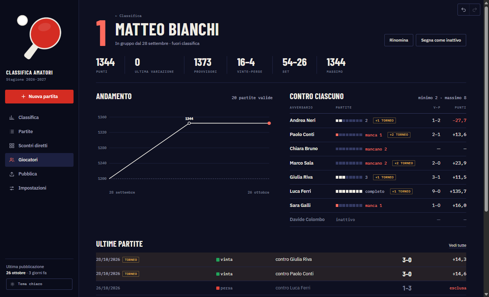
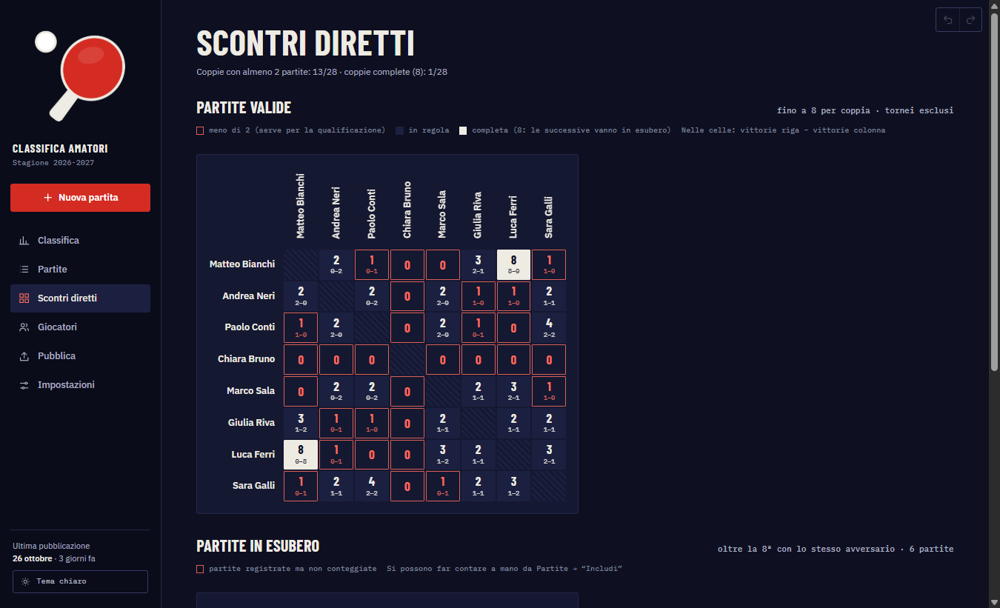
Le partite di torneo contano per la classifica con un K più alto (di base 48) e non rientrano né nelle 8 per coppia né nelle 2 minime.
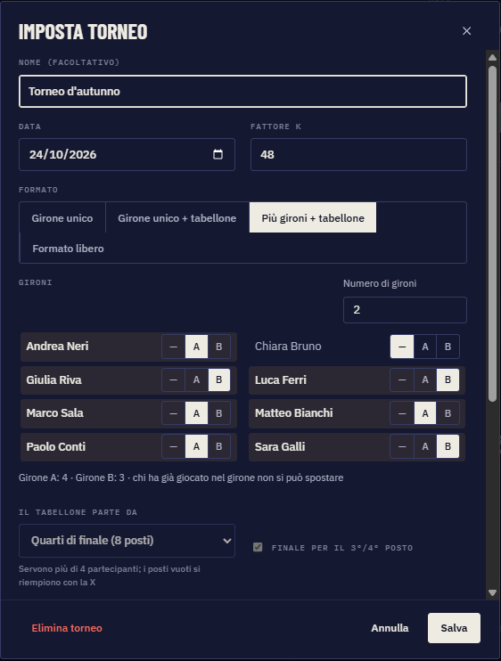
Nome, data, K, gironi e tabellone si cambiano in qualsiasi momento da “Imposta” (quello che è già stato giocato resta bloccato). Con “Elimina torneo” il torneo sparisce dagli elenchi e le sue partite vanno nel cestino (escono dalla classifica). Si può annullare con Ctrl+Z, e ripristinando una sua partita dal cestino torna anche il torneo. Se elimini l'ultima partita di un torneo, l'app elimina anche il torneo (e te lo dice prima).
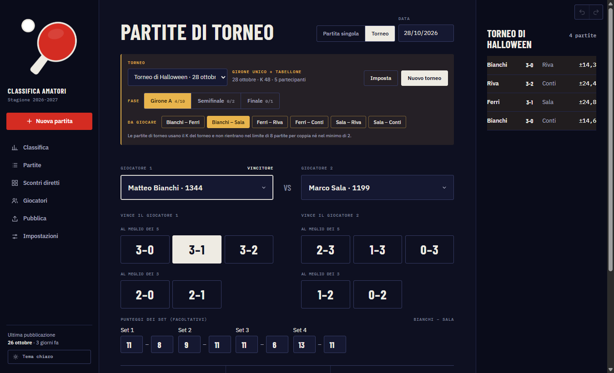
Quando l'ultima partita dei gironi è salvata, l'app compone da sola il primo turno del tabellone:
Gli accoppiamenti si possono sempre cambiare a mano da “Imposta”: ogni posto può essere un giocatore, la X o “da decidere”. Da quel momento l'app non li tocca più; “Ricomponi dai gironi” li rifà automaticamente.
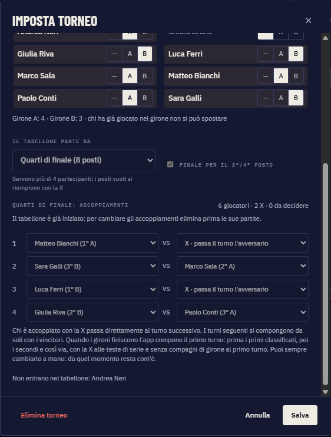
Se un turno non ha partite da giocare, l'app dice perché: turno completo, in attesa del turno precedente, oppure accoppiamenti da decidere.
Come nella classifica FITET, i punti non cambiano a ogni partita: la classifica resta ferma fino alla pubblicazione successiva. Ogni partita vale subito i suoi punti (calcolati sulla classifica in vigore), ma si sommano solo quando si pubblica. Quando è ora compare un pallino rosso su Pubblica.
In alternativa: testo per WhatsApp, oppure salva PNG, PDF, Excel o CSV. Una pubblicazione fatta per errore si toglie dall'elenco con Elimina: le sue partite tornano in attesa. Se correggi una partita di un periodo già pubblicato, la classifica si ricalcola.
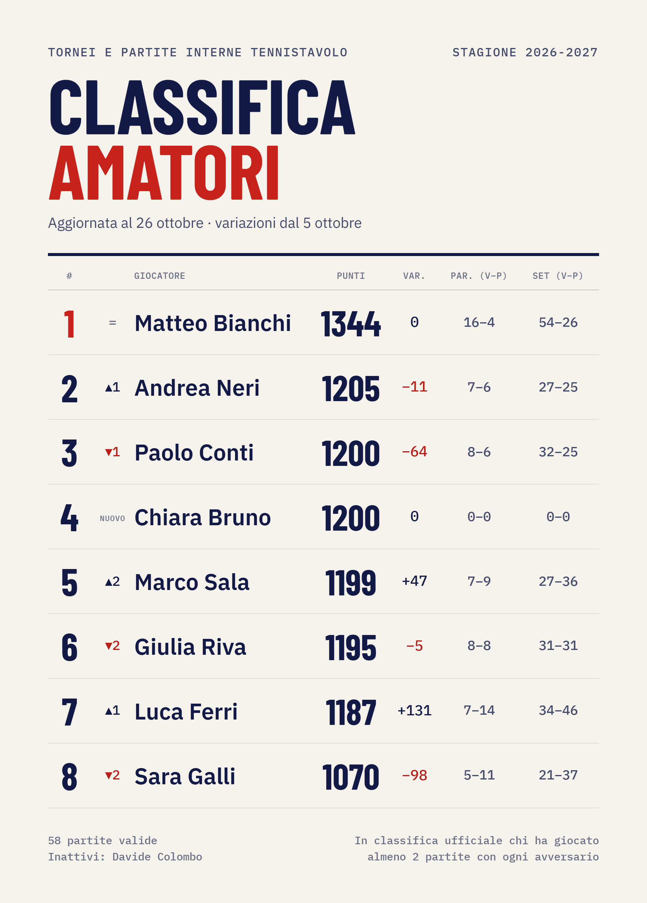
In Pubblica scegli “Torneo” e il torneo. L'immagine contiene podio, partecipanti, classifica e risultati di ogni girone (con i set, se inseriti) e il tabellone con le X. Stessi pulsanti: copia per WhatsApp, testo, PNG, PDF.
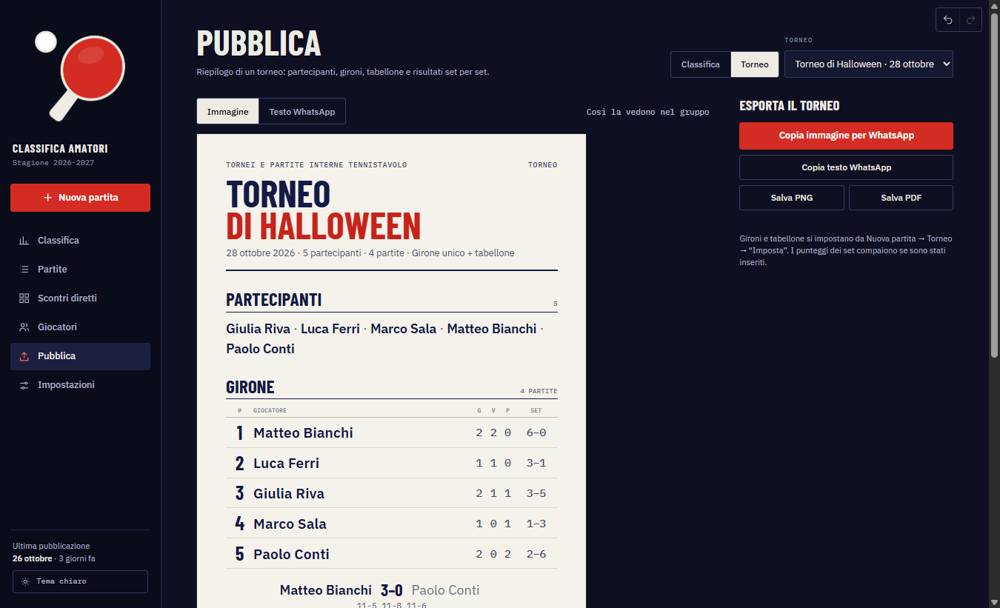
Nel PDF nessuna parte viene spezzata a metà tra due pagine: un girone o il tabellone che non ci stanno ripartono dalla pagina successiva.
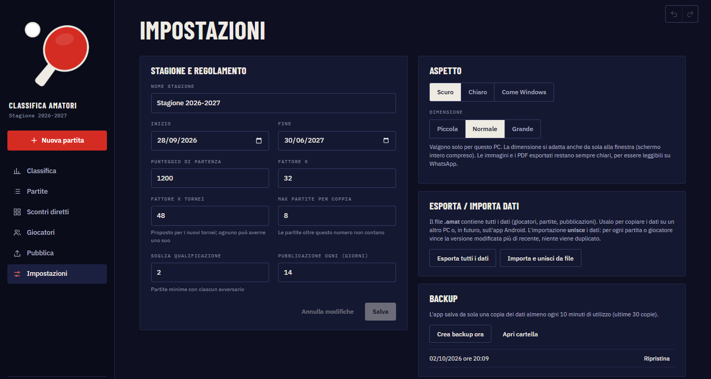
| Stagione e regolamento | Nome e date della stagione, punteggio di partenza, K, K proposto per i nuovi tornei, massimo partite per coppia, soglia per la classifica ufficiale, giorni tra le pubblicazioni. Cambiando un valore la classifica si ricalcola. |
| Aspetto | Tema scuro, chiaro o come Windows; grandezza dei testi. Valgono solo per questo PC. |
| Esporta tutti i dati | Crea un file .amat con tutto (giocatori, partite, tornei, pubblicazioni): da conservare o portare su un altro PC. |
| Importa e unisci | Aggiunge i dati di un file .amat a quelli presenti, senza doppioni: per ogni partita vince la versione modificata più di recente. |
| Backup | L'app salva da sola una copia dei dati almeno ogni 10 minuti di utilizzo (tiene le ultime 30). “Crea backup ora” ne fa una subito; “Ripristina” torna a una copia precedente. |
Quando esce una nuova versione basta installarla sopra quella vecchia: i dati restano dove sono (nella cartella %APPDATA%\Amatori) e non vengono toccati.
Le regole della stagione e come le applica l'app. Tutti i numeri si cambiano da Impostazioni.
| Regola | Cosa fa l'app |
|---|---|
| Si parte da 1200 punti | Tutti, anche chi entra a stagione in corso. |
| Punteggio Elo con K = 32 | Chi batte un avversario più forte guadagna di più; chi perde con uno più debole perde di più. Tra due giocatori alla pari, chi vince prende 16 punti e l'altro li perde. |
| Al massimo 8 partite con lo stesso avversario | Dalla 9ª in poi la partita è registrata ma non conta (“esubero”). Resta visibile, barrata, e si può far contare a mano con “Includi”. |
| Classifica ufficiale: almeno 2 partite con ciascuno | Chi non ci arriva resta nella classifica dell'app con una riga rossa sotto il nome. Contano solo gli avversari attivi. |
| Chi smette di giocare | Segnato come inattivo: le sue partite vanno in pausa (salvate, ma non contano per nessuno) finché non viene riattivato. |
| Tornei | K proprio (di base 48); le partite di torneo non occupano posti delle 8 per coppia e non valgono per le 2 minime. |
| Classifica dei gironi | Vittorie; a parità, gli scontri tra i pari merito (vittorie, differenza set, differenza punti), poi set e punti su tutto il girone. |
| Casi particolari | Ogni partita si può includere o escludere a mano, scrivendo il motivo. |
| Pubblicazione ogni 2 settimane | Un pallino rosso su “Pubblica” ricorda quando è ora. Frecce e variazioni sono calcolate rispetto all'ultima classifica pubblicata. |
La classifica è sempre ricalcolata da zero ripercorrendo le partite in ordine di data: qualsiasi correzione, anche vecchia, aggiorna tutto in modo coerente.